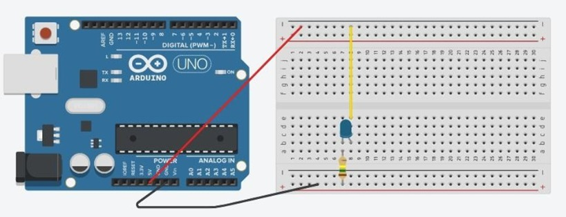
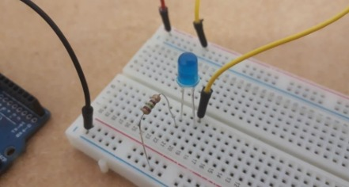
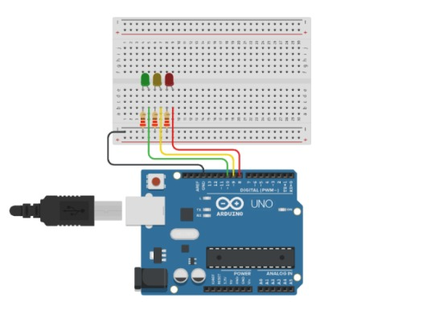
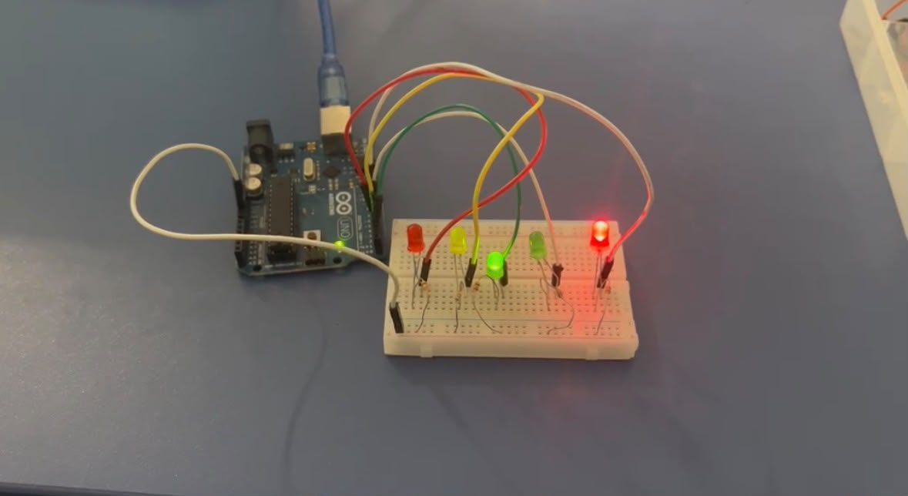
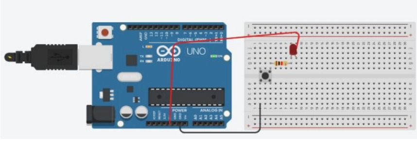
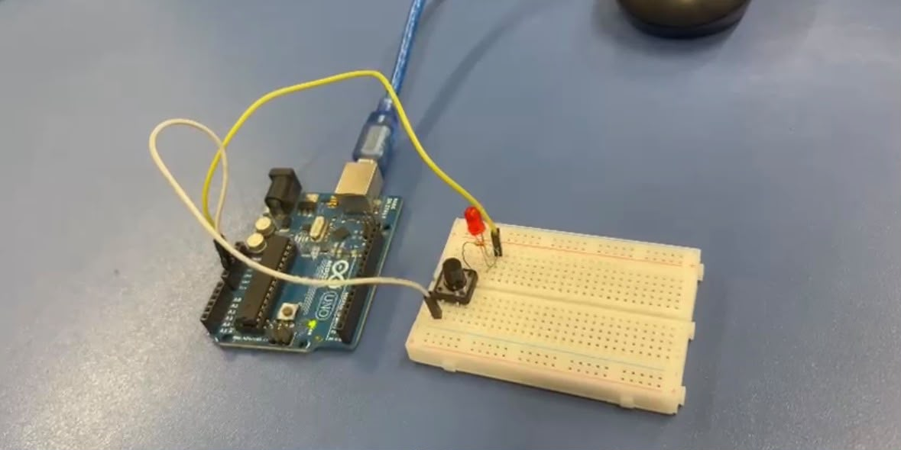

Acender LED.

Nesta atividade, desenvolvi um circuito simples utilizando Arduino UNO para realizar o acionamento de um LED. O objetivo foi compreender como realizar a ligação dos componentes eletrônicos e entender como o Arduino pode controlar uma saída digital. Com essa atividade, aprendi os conceitos básicos de montagem em protoboard e o funcionamento de um LED em um circuito eletrônico.

Protótipo da montagem física: A montagem foi realizada em uma protoboard utilizando Arduino UNO, LED e resistor. O LED foi conectado a uma porta digital do Arduino para que pudesse ser acionado.
Código: Não consta código específico para esta aplicação.
Justificativa: A atividade foi importante para compreender os conceitos básicos de eletrônica e programação com Arduino, servindo como introdução ao desenvolvimento de projetos de Internet das Coisas.
H01 - Reconhecer especificações técnicas e paradigmas de IoT
H02 - Integrar dispositivos para coleta automática de dados
H03 - Integrar dispositivos de comunicação de dadosH04 - Reconhecer especificações de sensoriamento e parametrização
H05 - Integrar projeto orientado a sensoriamento e controle. parametrização
Semáforo.

Nesta atividade, desenvolvi um protótipo de semáforo utilizando Arduino UNO e LEDs. O objetivo foi compreender como diferentes componentes eletrônicos podem ser controlados por meio da programação. A atividade permitiu relacionar a montagem física com a lógica de programação e o funcionamento de sistemas automatizados presentes no cotidiano.

Protótipo da montagem física: A montagem foi realizada em uma protoboard utilizando LEDs para representar as diferentes sinalizações do semáforo. Os componentes foram conectados às portas digitais do Arduino para realizar os testes de funcionamento.
Código:
// controlando o pino através de uma variável
int pino = 10;
void setup() {
pinMode(pino, OUTPUT);
}
void loop() {
digitalWrite(pino, HIGH);
}Justificativa: A atividade permitiu aplicar conhecimentos de programação e eletrônica em uma situação prática, demonstrando como um sistema automatizado pode controlar componentes eletrônicos por meio de comandos programados.
H01 - Reconhecer especificações técnicas e paradigmas de IoT
H02 - Integrar dispositivos para coleta automática de dados
H03 - Integrar dispositivos de comunicação de dadosH04 - Reconhecer especificações de sensoriamento e parametrização
H05 - Integrar projeto orientado a sensoriamento e controle. parametrização
Controle de LED com Botão — Desafio Lógica Toggle.

Nesta atividade, desenvolvi um circuito utilizando Arduino UNO para trabalhar com o controle de um LED por meio de um botão. O objetivo foi compreender a relação entre entradas e saídas digitais e praticar a lógica utilizada para controlar um componente eletrônico.

Protótipo da montagem física: A montagem foi realizada utilizando Arduino UNO, protoboard, LED, resistor e botão. Os componentes foram conectados às portas do Arduino para realizar os testes de acionamento do circuito.
Código:
// C++ code
void setup() {
pinMode(LED_BUILTIN, OUTPUT);
}
void loop() {
digitalWrite(LED_BUILTIN, HIGH);
delay(1000);
digitalWrite(LED_BUILTIN, LOW);
delay(1000);
}Justificativa: O desafio foi realizado para desenvolver a compreensão sobre o controle de saídas digitais e a utilização de comandos de programação para determinar o comportamento de um componente eletrônico.
H01 - Reconhecer especificações técnicas e paradigmas de IoT
H02 - Integrar dispositivos para coleta automática de dados
H03 - Integrar dispositivos de comunicação de dadosH04 - Reconhecer especificações de sensoriamento e parametrização
H05 - Integrar projeto orientado a sensoriamento e controle. parametrização